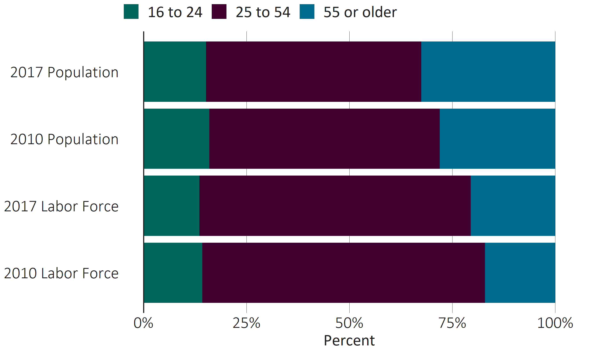
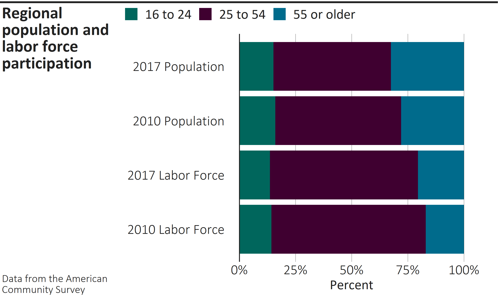

This R package provides themes, color scales, and other custom functions for ggplot2, based on Chicago Metropolitan Agency for Planning (CMAP) design guidelines.
CMAP staff who are interested in using this package, or merely staying in the loop, are encouraged to join the R team in Microsoft Teams and follow the “cmapplot” channel.
The basics
The cmapplot package contains a few key components:
- Apply a CMAP theme to ggplots with
theme_cmap() - Easily provide common CMAP plot customizations, such as with custom geoms
geom_recessions()andgeom_text_lastonly() - Apply CMAP colors using a variety of custom functions (e.g.
cmap_fill_discrete()) - Place the themed plot within a CMAP layout, and export the plot from R if desired with
finalize_plot()
Installation
Run the following to install or update cmapplot:
## Install current version from GitHub
devtools::install_github("CMAP-REPOS/cmapplot", build_vignettes=TRUE)
## Then load the package as you would any other
library(cmapplot)For more detailed information about installing the package, particularly on a CMAP-issued computer, see this article.
To install on macOS, users must install XQuartz before cmapplot can be loaded. (This can be easily accomplished via the Homebrew package manager with the command brew install --cask xquartz.)
A note about fonts: The cmapplot package works best when installed on a computer with the Whitney family of fonts installed (specifically the Book, Medium, and Semibold variants). If installed on a computer without Whitney, the package will still work, but the fonts will default to Calibri (on Windows) or Arial (on macOS/Linux).
CMAP theme and colors
The function theme_cmap() returns a complete ggplot2 theme that can be added to a ggplot code block (similar to ggplot2::theme_minimal() or ggplot2::theme_bw()). Additionally, theme_cmap() accepts a variety of arguments to additionally customize the theme output. CMAP color functions apply colors from the CMAP color palette to the plot.
ggplot(data = pop_and_laborforce_by_age,
aes(x = value,
y = interaction(year, variable, sep = " "),
fill = age)) +
geom_col(position = position_stack(reverse = TRUE)) +
scale_x_continuous(labels = scales::percent) +
theme_cmap(xlab = "Percent",
gridlines = "v",
vline = 0) +
cmap_fill_discrete(palette = "environment")
Finalizing the plot
The function finalize_plot() places a ggplot within a frame defined by CMAP design standards. It provides a variety of customization options via arguments, and allows for in-R viewing and/or exporting in various formats.
finalize_plot(title = "Regional population and labor force participation",
caption = "Data from the American Community Survey",
width = 7, height = 4.25)
Additional reading
While this package is designed to make the application of CMAP design standards to plots relatively easy, developing a professional, finished plot in R will require a decent familiarity with the grammar of ggplot2. Excellent resources in this category already exist:
- The R graphics cookbook provides accessible examples of how to make almost any type of plot, as well as how to modify things like limits, scales, coordinate systems, and facets.
- The ggplot2 book delves deeper into why and how ggplot2 works the way it does, also with distinct chapters on topics like scales, coordinate systems, facets, etc.
- The ggplot2 website.
- The R for Data Science (R4DS) book, especially the Graphics for Communication chapter.